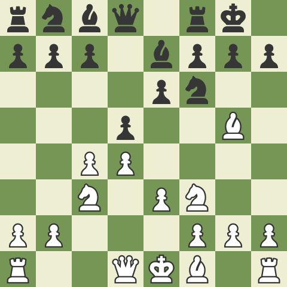

Как се играе Дамския гамбит
- Започнете с 1.d4: Като бели, започнете играта с ход 1.d4, придвижвайки пешката на вашата дама две полета напред. Този ход отваря центъра на дъската и подготвя почвата за дамския гамбит.
- Предложете гамбита: Играйте 2.c4, напредвайки с пешката си, за да атакувате пешката d5 на черните. Предлагайки пешката, вие изкушавате черните да я уловят, приемайки гамбита. Ако черните хванат пешката с 2...dxc4, дамският гамбит е започнат.
- Контролирайте центъра: След като черните приемат гамбита, вземете отново пешката с 3.e3, засилвайки контрола си над централното поле d4. Този ход подготвя установяването на солидна пешечна структура и позволява хармонично развитие на фигурите.
- Разработете вашите части: Съсредоточете се върху ефикасното развитие на вашите части. Дайте приоритет на развитието на рицари, епископи и кралица, като се стремите да ги поставите на активни квадрати. Конете могат да бъдат развити до c3 и f3, докато епископите могат да бъдат разположени до d3 и e2, като дамата често намира подходящо поле на d2.
- Сигурност на замъка и краля: След като вашите фигури са развити, помислете за рокада, за да гарантирате безопасността на вашия крал. Рокадата включва преместване на краля с две полета към топа и поставяне на топа на съседното поле. Кралската рокада (O-O) е най-честият избор в Дамския гамбит.
- Планирайте пешките: Гамбитът на дамата често включва специфични пешечни структури, като например изолирана пешка на дамата (IQP). Изследвайте прекъсванията на пешки като e4 или c5, за да предизвикате позицията на черните и да създадете тактически възможности. Тези прекъсвания могат да ви помогнат да отворите линии за вашите фигури и да упражните натиск върху позицията на черните.
- Поддържайте гъвкавост: Адаптирайте плановете си според ходовете на опонента си и променящата се позиция на дъската. Останете отворени към алтернативни варианти и тактически възможности. Непрекъснато преоценявайте позицията и вземайте информирани решения въз основа на променящата се динамика на играта.
- Помислете за стратегията за финала: Гамбитът на дамата може да доведе до сложни финали. Развийте разбирането си за пешечните структури, основните принципи на ендшпила и превръщането на позиционните предимства. Тези умения ще ви позволят да се възползвате от стратегическите си печалби и да си осигурите победа в по-късните етапи на играта.
